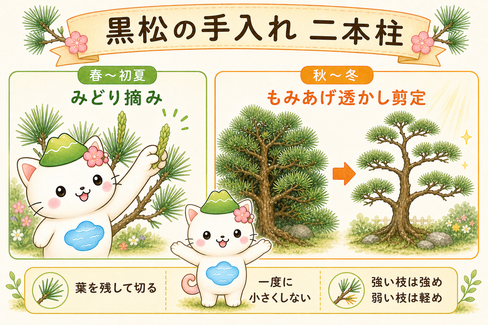
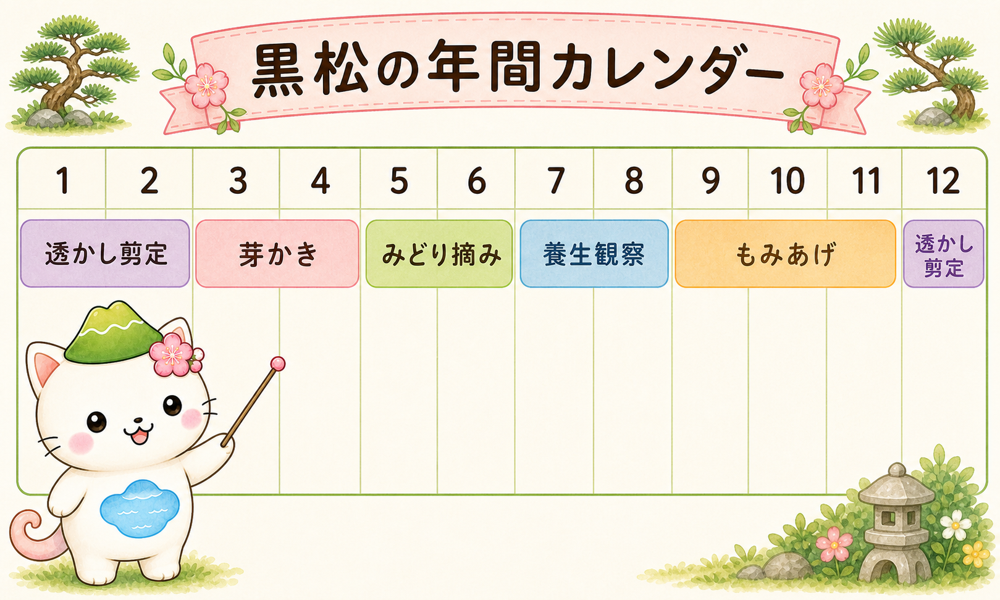
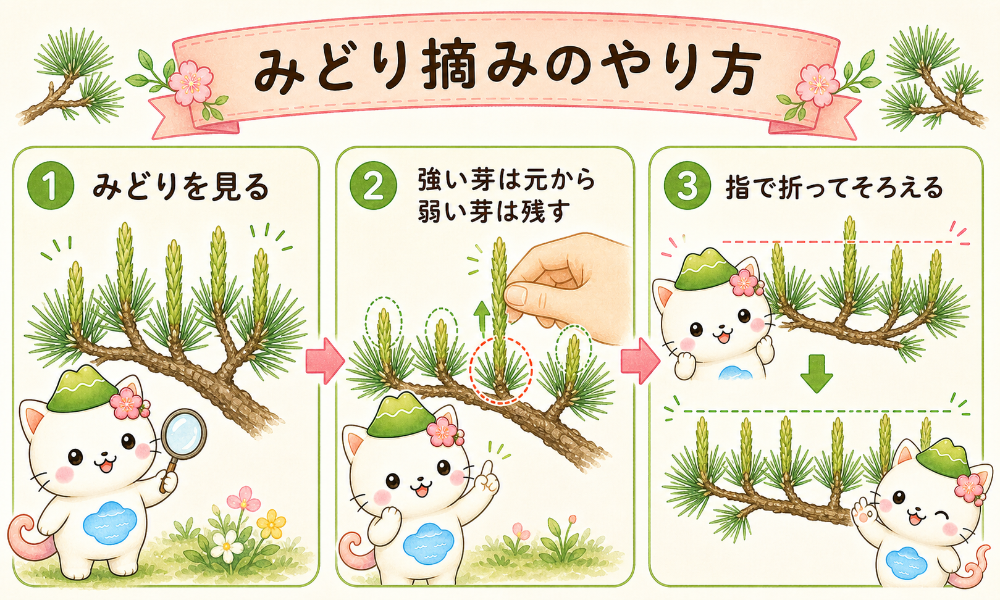
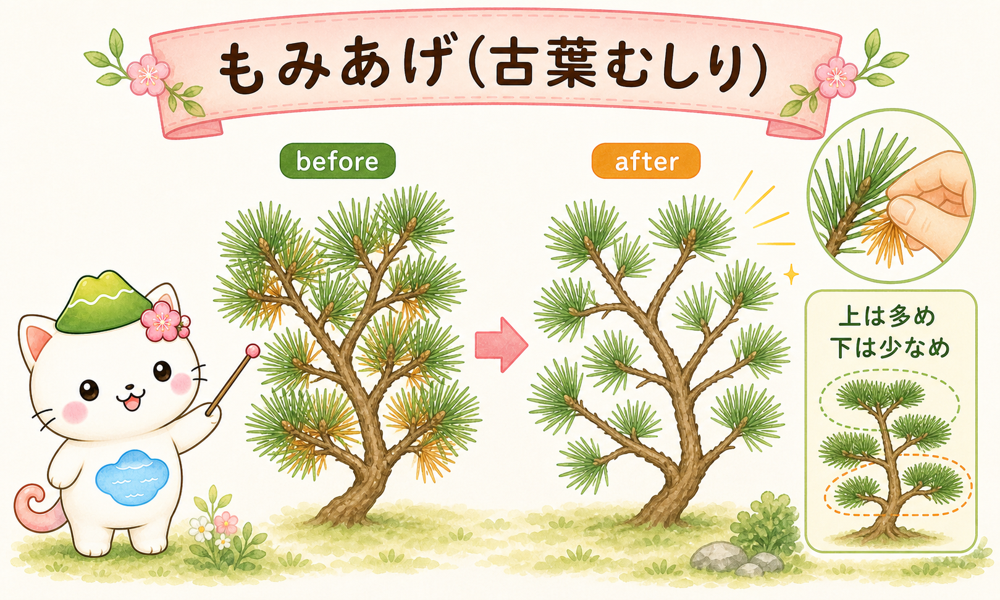
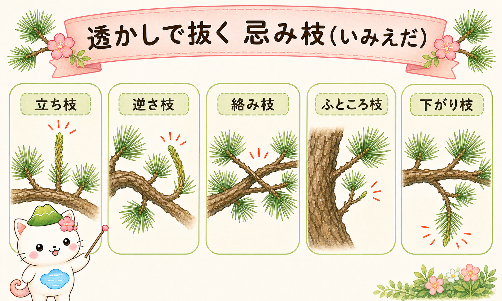
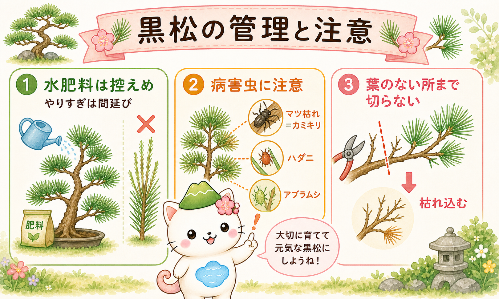

黒松はどんな木？ なぜ手入れが要る？
黒松は、葉が2本ずつ束になって生える「二葉松（にようまつ）」の常緑針葉樹です。日光が大好きな陽樹で、潮風にも強く、海岸の防風林にも使われるほど丈夫。荒々しく力強い樹姿から「雄松（おまつ）」とも呼ばれ、やわらかな赤松（雌松）と対にされます。
丈夫で成長力が強いのは長所ですが、放任すると枝が間延びして上ばかり茂り、内側や下の枝が日陰になって枯れ込みます。だから黒松の手入れは、伸びすぎる力を毎年少しずつ調整して、枝数・葉量・光の通りを整える作業になります。
そしてもうひとつ大事な性質。黒松は広葉樹のように、葉のない古い枝から自由に芽を吹き戻してはくれません。これが「どこで切るか」をシビアにする理由です（詳しくは次章）。

この記事は、庭や庭仕立ての黒松向け。盆栽の細かい技とは前提がちがうから、まずは家庭で再現しやすい手入れからいこうね。
手入れの二本柱と、4つの大原則
黒松の手入れは、大きく分けると二本柱です。春〜初夏の「みどり摘み」で新芽の伸びをそろえ、秋〜冬の「もみあげ・透かし剪定」で古葉を減らして枝を整える。この2つを毎年くり返します。

そして、どの季節の作業でも共通する4つの大原則があります。これだけは先に頭へ入れておきましょう。
- ① 葉を残して切る … 葉のない位置で切ると、その先が枯れ込む。必ずどこかに葉や若枝を残す。
- ② 一度に小さくしない … 大枝を急に落とさず、2〜3年かけて少しずつ。
- ③ 強い枝と弱い枝を分ける … 上・外周の強い枝は強め、下・内側の弱い枝は軽め。樹勢の差を広げない。
- ④ 日付より「樹の状態」で見る … 暖地は早く寒冷地は遅い。芽や葉のサインで適期を判断する。
年間カレンダー：いつ何をする？
細かい手順の前に、1年の流れを地図にしておきます。下のカレンダーで「季節ごとの主役の作業」をつかんでください。月はあくまで関東以西の平地の目安で、地域・その年の気候で前後します。

- 春（3〜4月）：芽吹きの観察、芽かき（芽数調整）、芽出し肥（控えめ）
- 初夏（5〜6月）：みどり摘み（新芽の伸びをそろえる）
- 真夏（7〜8月）：養生と観察（強剪定は避ける）、水・病害虫の管理
- 秋（9〜11月）：もみあげ（古葉むしり）、お礼肥
- 冬（12〜2月）：透かし剪定（忌み枝の整理）
春（3〜4月）：芽吹きと芽かき
冬を越した黒松は、春に枝先で新しい芽を動かし始めます。この時期はまず、枯れ枝や、秋に取り残した古葉を軽く片づけて、木の様子を観察します。
芽かき（芽数調整）
黒松は枝先に複数の芽がまとまって立ち上がります。そのまま全部伸ばすと、枝分かれが多すぎてこんもり重くなり、内側が混みます。そこで、勢いと向きを見て、ふつうは2本前後（きれいに二又になるように）を残し、真上に立つ芽・内向きの芽・極端に強い芽を元から欠きます。
枝を伸ばして骨格を作りたい場所では、中心の勢いある芽を活かす余地を残します。逆に、枝数を抑えて落ち着かせたい場所では、外向きの使いやすい芽を選んで残します。
春の施肥は控えめに
芽出しに合わせて緩効性肥料を少量。ただし肥料が多すぎると芽が間延びして徒長し、せっかくの締まった枝ぶりが崩れます。黒松は「やせ地でも育つ木」。与えすぎないのがコツです。
芽かきで迷ったら「二又に残す」が基本。3本以上残すと、数年後にその場所がふくらんで透かしにくくなるよ。
初夏（5〜6月）：みどり摘み
黒松の手入れで、いちばん黒松らしい作業が「みどり摘み」です。春に芽がろうそくのように伸びてきます。これを「みどり」と呼び、葉が開ききる前のやわらかいうちに摘んで、新梢の長さと勢いをそろえます。これをすることで、間延びを防ぎ、枝先を締まった姿に保てます。

やり方の流れ
まず、1か所から何本のみどりが出ているかを見ます。3本以上あれば、強すぎる中心のみどりを基から摘み、残す2本程度の勢いをそろえます。次に長さの調整。強い枝のみどりは元のほうから深めに、弱い枝のみどりは長めに残す——こうして、強い枝の勢いを抑え、弱い枝に葉を確保することで、木全体の強弱がそろっていきます。
ハサミより「指で折る」
みどりは、やわらかいうちなら指で簡単に折れます。ハサミで途中を切ると、切られた葉先が茶色く枯れて目立ちます。手で折り取るほうが、仕上がりがきれいです。
時期を逃したら
みどりが硬くなってしまったら、無理に一律で処理せず、秋冬の整理に回すのも一つの方法です。とくに若木は、骨格づくりを優先して、細かく詰めすぎないほうが後で作り直しやすくなります。
真夏（7〜8月）：養生と「芽切り」の話
真夏は高温と乾燥で木が消耗しやすい時期です。家庭の庭木では、強い剪定を標準にしないのが安全。枯れ枝や明らかな徒長枝の整理にとどめ、樹冠を急に透かしすぎないようにします。古葉や内枝を一気に減らすと、これまで陰だった幹や枝が急に日に当たり、日焼けして傷むことがあります。
「芽切り（短葉法）」は上級者向け
黒松には、初夏に伸びた芽を盛夏にいったん切り落とし、夏に出る二番芽で葉を短く整える「芽切り（短葉法）」という技法があります。葉を短くそろえられる強力な方法ですが、樹勢の旺盛な健康な木でないと逆に弱らせます。庭木では必須ではないので、自信がなければ「みどり摘み＋もみあげ」の基本だけで十分です。
夏は「がんばらない季節」。木も人も無理は禁物。気になる枝はメモして、秋冬の本番に回そうね。
秋（9〜11月）：もみあげ（古葉むしり）
秋になると、2年以上ついていた古い葉が黄ばんできます。これを手でむしって減らす作業が「もみあげ」（葉むしり）です。古葉を減らすと、枝の内側まで光と風が通り、内芽が元気になって、翌春の芽吹きにつながります。

上は多め、下は少なめ
ここでも大原則③が効きます。強い頂部や外周は古葉を多めに減らして勢いを抑え、弱い下枝や内側は葉を残し気味にして力を温存します。上から下へ順に進めると、全体の強弱を見ながら作業できます。
古葉の放置はNG
茶色い古葉をためたままにすると、風通しが悪くなり、病害虫やすす病の温床になります。もみあげは見た目を整えるだけでなく、木を健康に保つ意味でも大切な作業です。
冬（12〜2月）：透かし剪定と忌み枝
落葉樹が休む冬は、黒松でも枝の流れをじっくり見直す好機です。込み合った枝や不要な枝を整理して、枝の層（枝棚／えだだな）が見えるように「透かして」いきます。庭木の黒松では、外側を面で刈り込むより、いらない枝を元から抜いて流れを見せるほうが自然で美しく仕上がります。

抜く対象になりやすい「忌み枝」
樹形や流れを乱す枝を、まとめて「忌み枝」と呼びます。代表的なのは次のような枝です。これらを優先して、枝の付け根（元）から抜くのが基本です。
- 立ち枝：上へ強く突き上げる枝。勢いを独り占めしやすい。
- 逆さ枝・戻り枝：幹のほうへ内向きに伸び返る枝。
- 絡み枝：ほかの枝と交差してこすれる枝。
- ふところ枝：樹冠の内側にできる、日の当たらない弱い枝。
- 下がり枝：下へ垂れ下がる枝。流れを乱しやすい。
なお、松の透かしでは、こうした「忌み枝」に加えて、枯れ枝・伸びすぎた徒長枝・重なって混み合う枝も整理の対象になります。実際の現場では、枝の名前にこだわるより「流れを乱す枝・混み合う枝を抜く」と機能で考えるとスムーズです。
太枝はあわてず、葉を残して
太い枝の整理も冬向きですが、ここでも大原則。一度に落とさず数年かけて、そして葉のない位置まで切り戻さない。切り口が大きいときは癒合剤を塗っておくと安心です。上下で重なる枝は、どちらを生かすか先に決めて、一方を抜きます。
年に1回しか手入れできないときは？
ここまでは「初夏のみどり摘み」と「秋冬のもみあげ・透かし剪定」の二本柱で説明してきました。でも実際には、忙しくて年に1回しか手を入れられないという方も多いはず。そんなときは、春か冬の「どちらか一方を選び、その季節にできることへ寄せる」と考えると整理しやすくなります。どちらを選んでも、4つの大原則（葉を残す／一度に小さくしない／強弱を分ける／樹の状態で見る）は変わりません。
春に1回だけなら：みどり摘みを優先
春〜初夏に1回と決めるなら、主役はみどり摘みです。その年に伸びる新芽の長さと数をそろえる作業なので、これをやるだけで間延びを防いで、締まった姿と短めの葉を保ちやすくなります。黒松らしいコンパクトさを優先したい人向けです。
- みどり摘みをしっかり（やわらかいうちに、強い芽は深く・弱い芽は浅く）。
- ついでに芽かきと、明らかな枯れ枝・不要枝を抜く。
- 目立つ古葉は手で軽く取る程度に。
- 大きな透かしや太枝の強い切り戻しは避ける（高温期が近く、切り口が傷みやすいため）。
注意点は、込み合いや古葉の一掃が手薄になること。混んできた部分は、その場で軽く間引く程度にとどめ、本格的な枝抜きは翌年以降に回します。
冬に1回だけなら：もみあげ＋透かしを優先
冬に1回と決めるなら、主役はもみあげ（古葉むしり）と透かし剪定です。古葉を一掃し、忌み枝や込み枝を抜いて、樹形を整え、内側まで光を通すことができます。放任して込んできた木や、形を整え直したい木に向きます。
- もみあげで古葉を一掃し、風通しと光を確保。
- 透かしで忌み枝・込み枝を元から抜く（枝の流れ・枝棚を見せる）。
- 樹形の乱れも少しずつ調整（太枝は数年がかりで）。
- 葉のない所まで切らないを厳守。
注意点は、みどり摘みをしない分、春に新芽が伸びて間延びしやすいこと。気になる伸びすぎ枝は、葉を残して元から抜くか、つけ根寄りの芽の上で軽く整える程度にして、深追いしないのが安全です。
結局、春と冬どちらを選ぶ？
ざっくり言えば——締まった樹形・短い葉を保ちたいなら「春（みどり摘み）」、込んできた木や乱れた樹形を整えたいなら「冬（透かし・もみあげ）」。どちらも捨てがたいときは、春と冬を1年おきに交互に行うのもおすすめです。
年1回でも大丈夫。完璧を目指さなくていいから、「今年は何を優先するか」を決めて、毎年つづけることがいちばん大事だよ。
剪定以外の管理：水・肥料・病害虫
美しい樹形は、剪定だけでなく日々の管理に支えられています。とくに黒松で気をつけたい3点を押さえましょう。

水やり
地植えで根づいた黒松は、基本的に水やりはほぼ不要です（真夏の極端な乾燥時だけ補う程度）。鉢植えは、表土が乾いたらたっぷりと。過湿は根を傷めるので、水のやりすぎには注意します。
肥料
春の芽出し前と秋に、緩効性の肥料を控えめに。窒素分が多すぎると間延び・徒長して締まりが失われます。黒松はやせ地に強い木なので、肥料は「少なめ」が basically 正解です。
病害虫
いちばん怖いのが「マツ枯れ（松くい虫）」。マツノザイセンチュウという線虫が原因で、これをマツノマダラカミキリが運びます。夏に葉が急に赤茶けてきたら要注意。被害木は早めに処分し、地域によっては予防の薬剤散布も行われます。ほかに、アブラムシ・カイガラムシの排泄物に黒カビがつく「すす病」、高温乾燥期のハダニ、葉を食べるマツカレハ（マツケムシ）などがあります。風通しを良く保つことが、いちばんの予防になります。
よくある失敗とQ&A
Q. 強く切ったら、翌春に勢いの強い枝がボーボーに出た
黒松にかぎらず、強く切り戻すほど反動で徒長枝が暴れやすくなります。これはホルモンの働きで説明できます。一度で仕上げず、少しずつが正解。仕組みは 植物ホルモンと剪定 の記事でくわしく解説しています。
Q. 切った枝先が枯れ込んでしまった
葉のない位置まで切り戻した可能性が高いです。黒松は古枝から芽を吹き戻しにくいので、必ず葉や若枝を残して切るのが鉄則です。
Q. 下枝が枯れてきた
上部が茂りすぎて、下枝が日照不足になっているサインかもしれません。もみあげと透かしで上部の光を抜き、下枝まで日を届けることを意識します。枯れた枝は元から抜きます。
用語ミニ辞典
- みどり … 春に伸びるろうそく状の新芽。
- みどり摘み … みどりを摘んで新梢の長さ・勢いをそろえる初夏の作業。
- 芽かき … 枝先の芽数を減らして向き・数を整える春の作業。
- 芽切り（短葉法） … 盛夏に芽を切り二番芽で葉を短くする上級技法。
- もみあげ（葉むしり） … 古葉を手でむしって減らす秋冬の作業。
- 透かし剪定 … 不要枝を抜いて枝の流れ・枝棚を見せる剪定。
- 忌み枝（いみえだ） … 立ち枝・逆さ枝・絡み枝など、流れを乱す不要枝の総称。
まとめ
黒松の手入れは、春のみどり摘みと秋冬のもみあげ・透かし剪定が二本柱。そこに「葉を残して切る」「一度に小さくしない」「強い枝と弱い枝を分ける」「日付より樹の状態で見る」という4原則を重ねれば、大きな失敗はぐっと減ります。
水と肥料は控えめに、病害虫は早めに気づく。そして何より、今年で完成させようとせず、毎年少しずつ。黒松は、手をかけた分だけゆっくりと、力強く端正な姿で応えてくれる木です。あなたの庭の一本と、長くつき合っていきましょう。
おつかれさま！ 「なぜその切り方がいいの？」を仕組みから知りたくなったら、植物ホルモンと剪定の記事もどうぞ。剪定の見え方がもっと変わるよ。